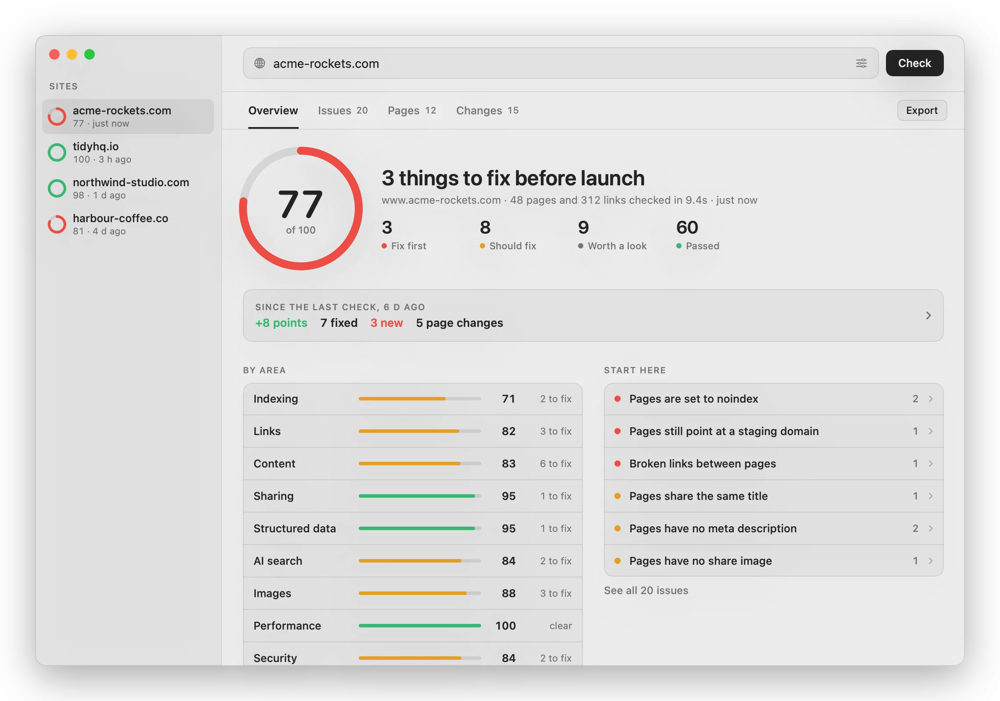
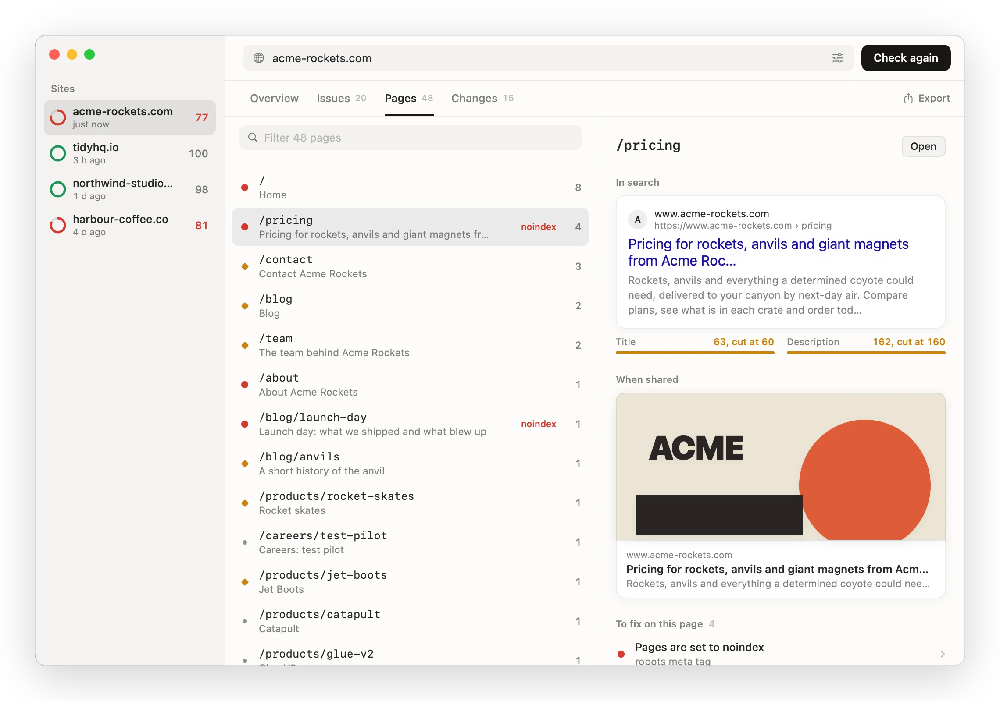
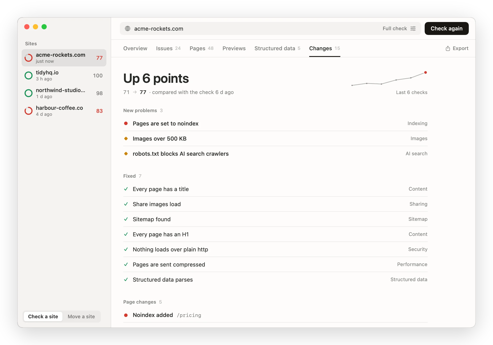

Check a site before it goes live.
Launchcheck reads every page and runs 104 checks for the mistakes that quietly cost a launch its search traffic. A noindex left on from staging. A canonical still pointing at webflow.io. A share image that 404s.
Free and open source. macOS 14 or later. No account, nothing leaves your Mac but the requests to the site.
- Reading robots.txt
- Reading the sitemap
- Reading pages
- Checking links
- Weighing images
- Checking the domain
3 things to fix before launch
- 2 pages are set to noindex
- A canonical points at webflow.io
- 48 pages link to a page that 404s

Eighty-four things, sorted by how much they matter.
Every check explains itself in a sentence. Pick an area, then open any line to read why it is there.
Fix before launch
Should fix
Worth a look
See every page the way it will be seen.
Pick a page and Launchcheck shows it as a search result and as a link card, cut exactly where they would be cut. No more counting characters.
Rockets, anvils and everything a determined coyote could need, delivered to your canyon by next-day air.


Know what the last deploy did.
Every check is kept. The next one is compared with it, so a fix is confirmed and a regression is caught the day it ships.
- Fixed and new. Which checks went green and which went red.
- Page by page. A noindex added, a canonical changed, an H1 rewritten, structured data dropped.
- Before and after. Run it on staging, then again once it is live.
The same engine, in a terminal.
It exits with 1 when something must be fixed before launch, so a CI job can refuse to ship a site that would hide itself from search.
$ launchcheck acme-rockets.com https://www.acme-rockets.com/ 3 things to fix before launch Score 77 of 100 (Not ready) · 48 pages and 312 links checked in 9.4s Indexing ██████████████░░░░░░ 71 Links ████████████████░░░░ 82 Structured data ███████████████████░ 95 FIX BEFORE LAUNCH ✗ Pages are set to noindex (2) A noindex tag or header tells search engines to drop the page. - /pricing robots meta tag - /blog/launch-day robots meta tag $ launchcheck acme-rockets.com --baseline before.json ✓ Fixed: Every page has a title ✗ New: robots.txt blocks AI search crawlers
A report you can trust is one that knows when to stay quiet.
A blocker is never called good
A site with anything to fix before launch reads “Not ready”, whatever its score says.
Other people's 403 is not your broken link
A link to another site is only called broken when the page is plainly gone.
Training crawlers are your call
Only the AI crawlers that answer questions and cite sources are checked. Blocking the rest is a business decision.
What does not apply is left out
A site in one language gets no International score at all, not a free pass.